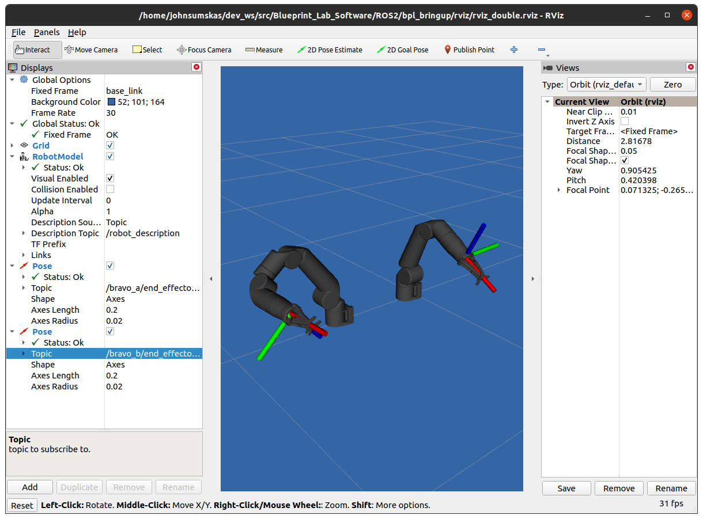

ROS2
Here are details for usage of the Reach Robotics ROS2 Packages
Installation
To install ROS please follow instructions at https://docs.ros.org/en/foxy/Installation.html.
First clone the repository to your workspace.
cd ~/dev_ws/src
git clone https://github.com/Reach-Robotics/reach_robotics_sdk.git
Now install the bplprotocol python package
cd reach_robotics_sdk/bplprotocol
pip3 install .
To build all packages
cd ~/dev_ws
colcon build
Usage
The ROS2 Folder is split into several ROS2 packages.
bpl_passthrough
The BPL Passthrough is the core package that allows communication to bpl products.
You can connect to a manipulator via serial or UDP (Bravo arms only).
The bpl_msgs/Packet data field is structured as a list of uint8. This is a list of bytes.
For incoming floats, they will be encoded as 4 bytes. Refer to the bplprotocol SDK on how to decode these bytes into floats.
ros2 run bpl_passthrough udp_passthrough --ros-args -p ip_address:=192.168.2.4 port:=6789
or
ros2 run bpl_passthrough serial_passthrough --ros-args -p serial_port:=/dev/ttyUSB0
Published Topics
/rx (bpl_msgs/Packet) - Received Packets from the manipulator
Subscribed Topics
/tx (bpl_msgs/Packet) - Packets that will be sent to the manipulator
Parameters - udp_passthrough
ip_address (string) - IP Address of the arm. (Defaults to 192.168.2.3)
port (int) - UDP Port of the arm. (Defaults to 6789)
Parameters - serial_passthrough
serial_port (string) - Serial Port to connect to the arm (Defaults to “/dev/ttyUSB0”)
baudrate (int) - Baudrate port of the serial connection. (Defaults to 115200)
Examples
bpl_bravo_description
BPL Bravo Description package cintains the Universal Robot description File (URDF) files for the bravo range of manipulators.
Supported Products:
RB-7001 - Reach Bravo 7
RB-5001 - Reach Bravo 5
Examples
Examples on viewing URDFs in RVIZ.

Viewing a Bravo 7 URDF:
ros2 launch bpl_bravo_description view_bravo_7.launch.py
Viewing a Bravo 5 URDF:
ros2 launch bpl_bravo_description view_bravo_5.launch.py
Viewing a Bravo 5 and Bravo 7 URDF:
ros2 launch bpl_bravo_description view_bravo_double.launch.py
bpl_control
The BPL Control is a package that provides control and feedback for a manipulator.
Note
The BPL Control Nodes are intended for use with a full duplex connection. (I.e not intended for use over 485 Serial)
joint_state_publisher
The Joint state publisher node will request and publish the corresponding joint states (position/velocity) to ROS.
Published Topics
joints_states (sensor_msgs/JointState) - Joint State of the manipulator.
tx (bpl_msgs/Packet) - Packets to be sent to the manipulator.
Subscribed Topics
rx (bpl_msgs/Packet) - Packets to be received from the manipulator
Parameters
joints (List) - List of the Joint Device IDs of the manipulator.
joint_names (List) - List of the corresponding Joint Names of the manipulator.
request_frequency (Float) - Frequency to request the joint positions from the manipulator (default: 10).
publish_frequency (Float) - Frequency to publish the joint state of the manipulator (default: 10).
end_effector_pose_publisher
The end effector pose publisher node will request the end effector pose from the manipulator and publish it to ROS.
Published Topics
end_effector_pose (geometry_msgs/PoseStamped) - End effector pose of the manipulator.
tx (bpl_msgs/Packet) - Packets to send the the manipulator.
Subscribed Topics
rx (bpl_msgs/Packet) - Packets to receive from the manipulator.
Parameters
frame_id (String) - TF Frame ID of the maniulator base (default: bravo_base_link).
frequency (Float) - Frequency to Request / Publish the end effector pose (default: 20)
control_node
Warning
Control Node is still under development. Some features are untested and may not work.
The BPL Control Node provides control of the manipulator. Control options include the following:
Joint Veloicty Control
Joint Position Control
End Effector Pose Control
Published Topics
tx (bpl_msgs/Packet) - Packets to send the the manipulator.
Subscribed Topics
control/
Examples
For examples see bpl_bringup.
bpl_bringup
BPL Bringup provides examples and launch files demonstrating examples if using all the packages together for ROS.
Bravo 5 Example

The launch file connects to a Bravo 5 over UDP and presents a live view on RVIZ. It also presents a visualisation of the current end effector pose.
ros2 launch bpl_bringup bravo_5_udp.launch.py ip_address:=192.168.2.4 port:=6789
Bravo 7 Example

The launch file connects to a Bravo 7 over UDP and presents a live view on RVIZ. It also presents a visualisation of the current end effector pose.
ros2 launch bpl_bringup bravo_7_udp.launch.py ip_address:=192.168.2.4 port:=6789
Bravo 7 and Bravo 5 Example
{kind=link}
The launch file connects to a both a Bravo 7 and Bravo 5 over UDP and presents a live view on RVIZ. It also presents a visualisation of the current end effector poses of the manipulator.
ros2 launch bpl_bringup bravo_double_udp_launch.py ip_address_a:=192.168.2.4 port_a:=6789 ip_address_b:=192.168.2.8 port_b:=6789